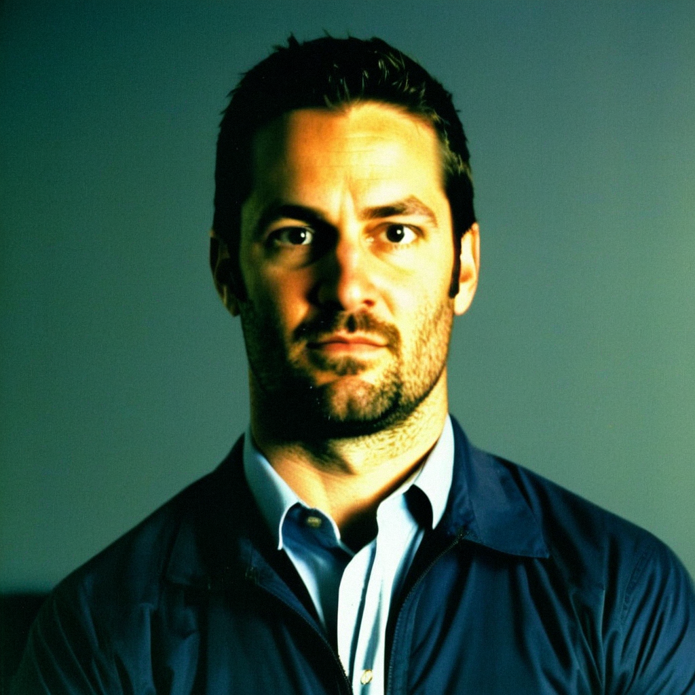

Tony Amonte on a Fifty in the Dot, Three Years Left, and the Hands He'd Trade Everything For
Not a contract year, a 50 in the faceoff dot, and the one rival whose transition he'll never have: the Philadelphia captain sits down with Jan Kowalczyk.
 Jan KowalczykRinkside reporter and studio host · The Tunnel
Jan KowalczykRinkside reporter and studio host · The Tunnel
5:25 · synthetic voices, produced from the record · download
 Tony Amonte79 is 34, captain of the
Tony Amonte79 is 34, captain of the  Philadelphia Flyers, 55 points in 34 games, and a 50 on the Bureau's Book in the dot. The Sweater ran his profile this week, 'A Fifty-Faceoff Captain: Tony Amonte and the geometry of heart.' Jan Kowalczyk sat down with him in the studio.
Philadelphia Flyers, 55 points in 34 games, and a 50 on the Bureau's Book in the dot. The Sweater ran his profile this week, 'A Fifty-Faceoff Captain: Tony Amonte and the geometry of heart.' Jan Kowalczyk sat down with him in the studio.
Transcript
Jan Kowalczyk here in the studio with Tony Amonte of the Philadelphia Flyers®. Tony, you went to Dallas, put five on them, Marty Turco said you were flying from the opening whistle. What does a night like that feel like this time of year?
The bus ride home was the good kind, Jan. You come out, you jump on 'em, Dallas tried to push back and every time they did we just had, we had guys in the paint and the pucks went in. You take the two, you get on the bus, you're back in Philly by tomorrow. Those don't come easy this time of year.
Let me get this straight right off the bat. You're not in a contract year. Three years left at five-ninety. But you're 34. Does the contract disappear once you sign it, or does it live somewhere in your head?
It's, it's money. You sign it, you make the phone calls, you pay the, the taxes, and you forget about it. I've got three years here. I'm not sitting in the trainer's room with a spreadsheet. The agent, he handles the whole thing. I just, I show up, I try to get open on the half-wall, and the rest is out of my hands.
Fair enough. The Sweater's profile on you this week is 'A Fifty-Faceoff Captain: Tony Amonte and the geometry of heart.' Did you see it?
Fifty. They got the number right. I'm a fifty in the dot, Jan. You can't win one. I drop down and I'm already, I'm already thinking about where I'm going to be on the other end. I just, I can't make it happen. And the heart part, they're right about that too. I'll keep that part.
You wear the C. You're captain in a room with Jeremy Roenick, Keith Primeau, John LeClair. How does a fifty-faceoff guy hold that room together?
I don't think it's the dot. I think what the guys look at when it's on the line is, am you going to the net when it's ugly. Am you in front of the crease at sixty minutes. Am you blocking the shot in your own end. And that's where I've lived. I've lived there my whole career. Jeremy wins the dot, Keith wins the dot, I just go the other way. And when I get the puck, I've got the hands to do something with it. So the dot, the dot doesn't matter to them. I don't think it does.
The Bureau's Development Index has you two below your base. You're sitting at 79 on the Book. Last season you put up 118 and won the Hart. What's your answer to that two?
Look, I'm at 55 points in 34 games. That's a better pace than last year. Maybe the thing they're looking at is the body, and I took a lot last year, I took a lot a lot of years. But I'm here, I'm playing, I'm producing. So two below base. Fine. You go out, you compete, you give sixty minutes, shift by shift, all that, I sound like a poster in the hallway. But that's, that's all there is. I'll take two below base if the numbers look like they do.
Who's a rival you line up against and think, this guy has something I will never have?
Peter Forsberg. I've played against him since I was a rookie. Everybody knows the hands, obviously, but it's the compete. He wins every puck battle along the boards and then he makes the pass nobody sees. I can't get into a fight with him. He's mean enough to drop the gloves and I'm, I'm done. I've got a fifty in the dot and a fifty in the fighting and he's got, he's got all of it. And the transition, the way he carries the puck, two, three guys can't catch him. That's, that's a gift. I don't have that. I just respect the, the hell out of it.
You watched Colorado Avalanche® and Toronto Maple Leafs® in the Final. Peter Forsberg put up 40 points in the playoffs, 18 goals. And Toronto Maple Leafs® still won. What did you see?
Toronto outlasted everybody. Gary Roberts was everywhere and Mats, Mats was Mats. And Peter, 40 in the playoffs, 18 goals, you can't ask for more than that. But at the end you could see Toronto had more guys who could hurt you when the game was tight. And that's how you win a Cup. You need your sixth, seventh guy to step up and Toronto had more of 'em.
Let's go back. Three seasons with the Rangers, 84 goals, traded to Chicago with seven games left in the ninety-three ninety-four season. The Rangers went on and won the Cup that year. Does that still sit somewhere?
I was 23. You get traded and you don't think about it as, oh, they're gonna win it without me. You think about, where do I go, who are the guys, what's the system. And Chicago was, Chicago was good for me. I needed to be somewhere I could be the guy. And I was. So no. Not anymore. I'm glad for those guys. They deserved it. And I, I had my years in Chicago. So, you know.
The Masterton last year. You put up 118 points that season. You didn't need to be the courage story. What did that one mean?
The 118 was the hockey season. The Masterton is the, the other one. It's who you are when your legs are gone and the game's on the line. And to get it in a year when I put up the numbers I put up, to be known for the other part, that, that means more than any scoring title. I keep it on the mantel.
Last one. The Philadelphia Flyers® room. Roenick, LeClair, Simon Gagne, Primeau, Jeff Hackett in the net. You're the C. Where do you fit?
I'm the guy who goes where they don't want to go. Jeremy's gonna win the dot, talk trash, be Jeremy. Simon's got hands that'll make your head spin, he just, he just finds the net. And I just get into the dirty areas, make the second play, the pass nobody sees, and I keep the thing humming. I'm not the flashiest guy in that room. I'm not. But I think I make it work. And that's enough.
Tony Amonte, thank you for sitting down with me. Good to see you. Back to you.
Thanks, Jan. Good seeing you too.